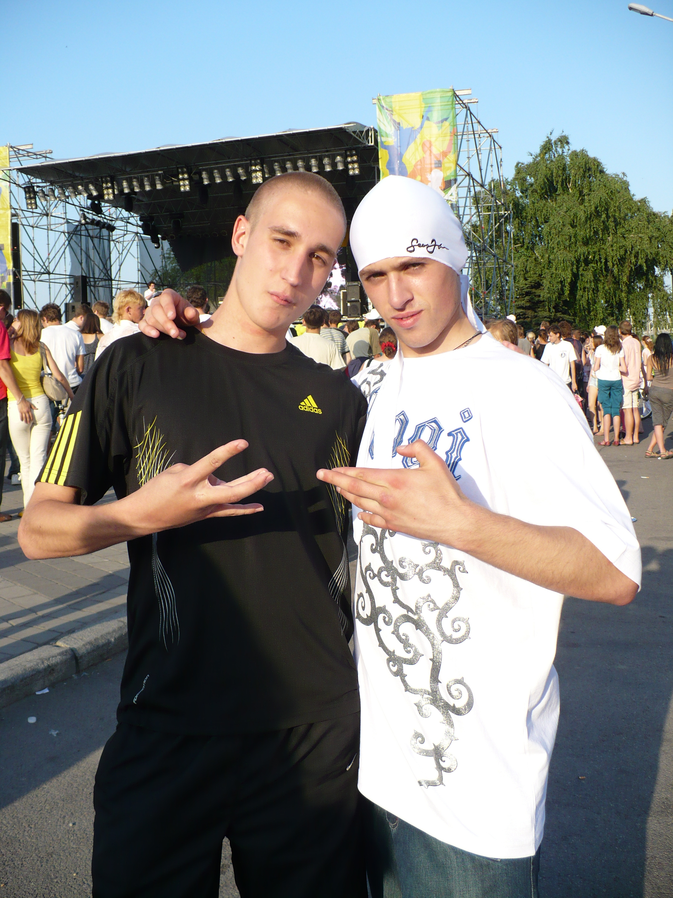
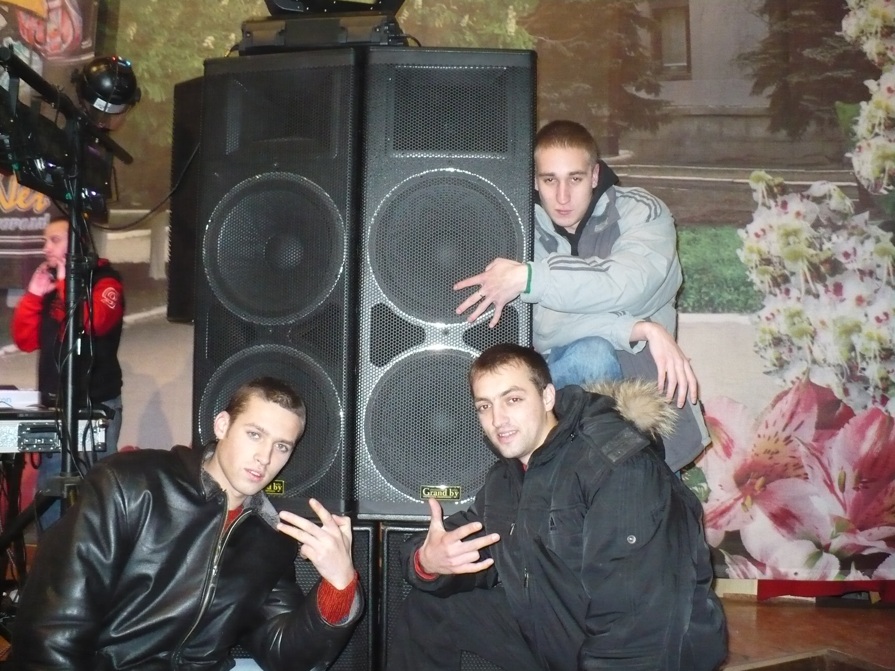
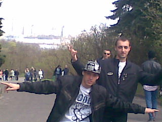

Таймай и Клим познакомились в томных курсантских буднях Ирпеня в начале 2007 года. Шли на обед в столовую, когда Клим включил на своем Sony Ericsson западный рэп — так и завязалось наше знакомство.
Репетиции и первые записи песен проходили в подвале казармы. Первые деньги за музыку — по 150 грн от профкома НУДПСУ и по одной розе. О нас несколько раз писали в университетской газете.
TAYMAY and KliM met during the weary cadet days of Irpin in early 2007. Walking to the canteen, KliM played Western rap on his Sony Ericsson phone — and that’s how it all started.
First rehearsals and recordings took place in the barracks basement. The first paycheck was 150 UAH each from the NU STSU student union, plus one rose each.